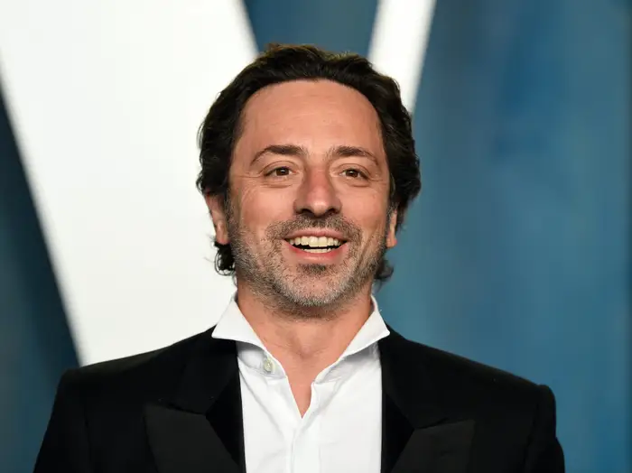

Charles Babbage
Mathematician and philosopher
Charles Babbage was a British mathematician, philosopher, inventor and
mechanical engineer who became known as the designer of the first automated,
programmable, mechanical calculating machine, the precursor to the electronic
computer.

Ada Lovelace
Mathematician
Augusta Ada Byron King, Lady Lovelace, born Augusta Ada Byron was a British
mathematician. She is known for her description of the "analytic machine", Charles
Babbage's early mechanical general-purpose computer.

Grace Hopper
Mathematician
Grace Brewster Murray Hopper was an American mathematician, pioneering
computer scientist, physicist and US Navy officer. Her credits include the first
programs for the Mark I Calculator and the first real compiler for a programming
language.

William Shockley
Physicist
William Bradford Shockley was a British/American physicist and
co-inventor of the transistor with John Bardeen and Walter Brattain, for which he
received the Nobel Prize in Physics in 1956.

Gordon Moore
Entrepreneur
Gordon Earle Moore was an American entrepreneur and co-founder of Intel. He
formulated Moore's Law.
Steve Wozniak
American entrepreneur
Stephen Gary Wozniak, also known by his nickname "Woz", is an American
technology entrepreneur, electronics engineer, computer scientist, computer
programmer, philanthropist, and inventor.

Steve Jobs
Former CEO of Apple
Steven Paul Jobs was an American businessman who was the co-founder,
chairman, and CEO of Apple; the chairman and majority shareholder of Pixar; a member
of The Walt Disney Company's board of directors following its acquisition of Pixar;
and the founder, chairman, and CEO of NeXT.

Bill Gates
Former CEO of Microsoft
William Henry Gates III is an American business magnate, investor,
philanthropist, and writer best known for co-founding the software giant Microsoft,
along with his childhood friend Paul Allen.

Kevin Mitnick
Hacker and sybersecurity
Kevin David Mitnick was an American computer security consultant, author,
and convicted hacker. He is best known for his high-profile 1995 arrest and five
years in prison for various computer and communications-related crimes.

rich Skrent
American computer programmer
Richard J. Skrenta Jr. is an American computer programmer and Silicon
Valley entrepreneur who created the web search engine blekko.

Linus Torvalds
Finnish-American software engineer
Linus Benedict Torvalds is a Finnish-American software engineer who is
the creator and lead developer of the Linux kernel, used by Linux distributions like
Debian, Arch and Android. He also created the distributed version control system
Git.

Larry Page
Former CEO of Google
Lawrence Edward Page is an American businessperson, computer scientist
and internet entrepreneur best known for co-founding Google with Sergey Brin.
computer.

Sergey Brin
Former president of Google
Sergey Mikhailovich Brin is an American businessperson best known for
co-founding Google with Larry Page. Brin was the president of Google's parent
company, Alphabet Inc., until stepping down from the role on December 3, 2019. He
and Page remain at Alphabet as co-founders, controlling shareholders and board
members.

Chad Hurley
Former CEO of YouTube
Chad Meredith Hurley is an American webmaster and businessman who serves
as the advisor and former chief executive officer of YouTube. He also co-founded
MixBit. In October 2006, he and Steve Chen sold YouTube for $1.65 billion to Google.

Steve Chan
Former chief technology officer of YouTube
Steve Chen is a Taiwanese-born American Internet entrepreneur who is one
of the co-founders and previous chief technology officer of the American
video-sharing website YouTube. After having co-founded the company AVOS Systems,
Inc. and built the video-sharing app MixBit, he joined Google Ventures in 2014.

Jawed Karim
American software engineer and internet entrepreneur
Jawed Karim is an American software engineer and Internet entrepreneur.
He is a co-founder of YouTube and the first person to upload a video to the site.
The site's inaugural video, "Me at the zoo", uploaded on April 23, 2005, has been
viewed over 287 million times as of October 1, 2023.

Mark Zuckerberg
CEO of Facebook
Mark Elliot Zuckerberg is an American business magnate, computer
programmer, internet entrepreneur, and philanthropist. He co-founded the social
media service Facebook and its parent company Meta Platforms, of which he is
executive chairman, chief executive officer and controlling shareholder.